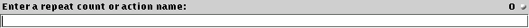

The so-called "jEdit command line" (has nothing to do with your operating system's command line) will be instantly familiar to users of Emacs, VIM, and many other editors. The command line allows commands to be repeated and arbitriary editor actions to be invoked. In addition, the register and quick search commands (see the section called Registers and the section called Quick Search in Chapter 7) use it to prompt for input.
To activate the command line, either invoke the Utilities>jEdit Command Line (keyboard equivalent: Control-Enter) command, or simply click the mouse in the command line field at the bottom of the view.
To repeat a command once the command line is active, type a number using the digit keys (0-9), followed by a keystroke or menu item selection. For example, to insert the "#" character 10 times, you would press Control-Enter 1 0 #. To paste the clipboard contents three times, press Control-Enter 3 Control-V.
To invoke an arbitriary action, start typing its name, instead of a repeat count. Completion popups will appear while your are entering a name; press Enter to invoke the action currently selected in the popup, and press Up or Down to navigate the popup. Currently, no complete documentation about jEdit's actions exists, but the two most useful are:
open-file: prompts for a path name and opens it
vfs-browser: prompts for a path name and opens it in the VFS browser
Tip: jEdit's macro system (see the section called Macros) also relies on editor actions; if you have ever looked at the source to a macro, you will see similar names to those that appear in action name completion popups. For this reason, the command line is a great tool when writing macros by hand.
Figure 4-5. The command line
